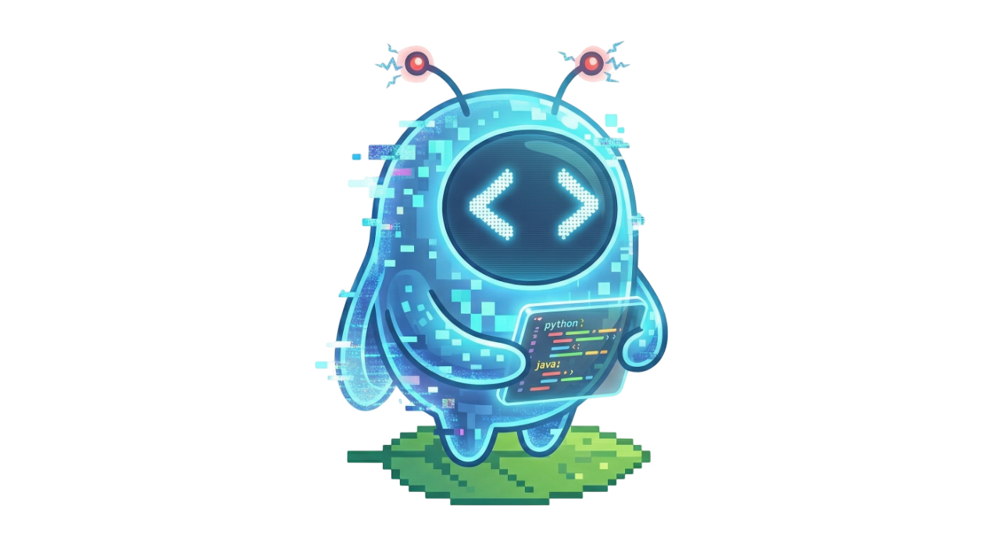

Duodingo
Cahier des Charges
Application mobile pour apprendre a coder
1. Presentation du projet
1.1 Contexte
L'apprentissage de la programmation est devenu une competence essentielle dans le monde numerique. Cependant, les ressources existantes sont souvent trop academiques, peu engageantes et decourageantes pour les debutants. Le modele gamifie de Duolingo a prouve son efficacite dans l'apprentissage des langues avec plus de 500 millions d'utilisateurs.
Duodingo applique ce meme concept a l'apprentissage du code : des lecons courtes, interactives et gamifiees qui rendent la programmation accessible et addictive.
1.2 Objectifs du projet
- Rendre l'apprentissage du code accessible aux debutants complets
- Proposer une experience gamifiee qui motive la pratique quotidienne
- Couvrir les langages les plus demandes (JavaScript, Python, HTML/CSS)
- Offrir une progression structuree du niveau debutant a intermediaire
- Fonctionner sur iOS et Android avec une seule base de code
1.3 Public cible
| Cible | Description |
|---|
| Etudiants (16-25 ans) | Etudiants souhaitant decouvrir ou completer leur apprentissage du code |
| Reconversion pro (25-45 ans) | Professionnels voulant apprendre les bases de la programmation |
| Curieux du numerique (tout age) | Personnes motivees par la culture numerique |
| Lyceens (15-18 ans) | Preparation aux etudes superieures en informatique |
1.4 Perimetre du projet
Inclus dans le projet :
- Application mobile cross-platform (iOS + Android)
- Backend API REST
- Base de donnees avec contenu pedagogique
- Systeme d'authentification
- Systeme de gamification complet
Exclus du projet (v1) :
- Application web
- Mode multijoueur en temps reel
- Editeur de code integre avec execution
- Paiements / version premium
2. Specifications fonctionnelles
2.1 Fonctionnalites critiques (Must Have)
F1 - Authentification
| ID | Fonctionnalite | Description | Priorite |
|---|
| F1.1 | Inscription | Creer un compte avec username, email, mot de passe | Critique |
| F1.2 | Connexion | Se connecter avec email et mot de passe | Critique |
| F1.3 | Deconnexion | Se deconnecter de l'application | Critique |
| F1.4 | Persistance de session | Rester connecte entre les sessions (token JWT) | Critique |
| F1.5 | Validation formulaire | Validation des champs (email valide, mdp 6+ chars) | Critique |
Regles metier :
- Le nom d'utilisateur doit etre unique (3-20 caracteres)
- L'email doit etre unique et au format valide
- Le mot de passe doit contenir au minimum 6 caracteres
- Le token JWT expire apres 30 jours
- Le mot de passe est hashe avec bcrypt (salt 10 rounds)
F2 - Catalogue de langages
| ID | Fonctionnalite | Description | Priorite |
|---|
| F2.1 | Liste des langages | Afficher les langages disponibles (JS, Python, HTML/CSS) | Critique |
| F2.2 | Selection de langage | Choisir un langage pour voir ses topics | Critique |
| F2.3 | Information langage | Afficher nom, icone, couleur, description | Critique |
F3 - Parcours de lecons (Skill Tree)
| ID | Fonctionnalite | Description | Priorite |
|---|
| F3.1 | Arbre de competences | Afficher les topics dans un parcours visuel (chemin) | Critique |
| F3.2 | Verrouillage progressif | Les topics se debloquent selon l'XP de l'utilisateur | Critique |
| F3.3 | Liste des lecons | Afficher les lecons d'un topic avec etat (fait/pas fait) | Critique |
| F3.4 | Indicateur de progression | Montrer visuellement l'avancement dans chaque topic | Critique |
Regles metier :
- Chaque topic a un seuil d'XP requis pour etre debloque
- Les topics verrouilles sont affiches avec un cadenas
- Le premier topic de chaque langage est toujours debloque (0 XP requis)
- Les topics alternent gauche/droite dans le parcours visuel
F4 - Systeme d'exercices interactifs
| ID | Fonctionnalite | Description | Priorite |
|---|
| F4.1 | QCM (Choix multiples) | Question avec 4 options, une seule correcte | Critique |
| F4.2 | Completion de code | Remplir le blanc dans un extrait de code | Critique |
| F4.3 | Vrai/Faux | Affirmer si un enonce sur le code est vrai ou faux | Critique |
| F4.4 | Remise en ordre | Remettre des lignes de code dans le bon ordre | Critique |
| F4.5 | Affichage du code | Afficher les extraits de code avec mise en forme | Critique |
| F4.6 | Feedback immediat | Indiquer si la reponse est correcte ou incorrecte | Critique |
| F4.7 | Explication | Afficher une explication apres chaque reponse | Critique |
Regles metier :
- Chaque lecon contient 3 a 5 exercices
- Les exercices sont presentes sequentiellement
- Apres une reponse, l'utilisateur voit le feedback avant de passer au suivant
- Les bonnes reponses sont surlignees en vert, les mauvaises en rouge
- L'explication s'affiche uniquement en cas de mauvaise reponse
F5 - Gamification et progression
| ID | Fonctionnalite | Description | Priorite |
|---|
| F5.1 | Points d'experience (XP) | Gagner de l'XP en completant des exercices | Critique |
| F5.2 | Systeme de niveaux | Monter en niveau tous les 100 XP | Critique |
| F5.3 | Serie quotidienne (Streak) | Compteur de jours consecutifs de pratique | Critique |
| F5.4 | Systeme de vies (Coeurs) | 5 vies max, perte d'une vie par mauvaise reponse | Critique |
| F5.5 | Ecran de resultats | Afficher le score, XP gagnes et statistiques apres chaque lecon | Critique |
| F5.6 | Barre de progression | Barre animee pendant la lecon | Critique |
Regles metier :
- XP par exercice reussi : 10 XP
- XP bonus pour lecon complete : proportionnel au score
- Niveau = (XP total / 100) + 1
- Streak : incremente si derniere pratique = hier, reset si > 48h sans pratique
- Coeurs : 5 maximum, -1 par mauvaise reponse, si 0 coeur = fin de lecon
- Score de lecon = (bonnes reponses / total exercices) × 100
F6 - Profil utilisateur
| ID | Fonctionnalite | Description | Priorite |
|---|
| F6.1 | Affichage profil | Avatar, username, email, niveau | Critique |
| F6.2 | Statistiques | XP total, streak, coeurs, lecons completees | Critique |
| F6.3 | Barre de niveau | Progression vers le prochain niveau | Critique |
| F6.4 | Badges | Affichage des badges debloques | Importante |
Badges prevus
| Badge | Condition | Icone |
|---|
| Premiere lecon | Completer 1 lecon | Cible |
| Serie de 7 jours | Streak de 7 jours | Feu |
| 500 XP | Atteindre 500 XP | Etoile |
2.2 Fonctionnalites importantes (Should Have)
F7 - Classement (Leaderboard)
| ID | Fonctionnalite | Description | Priorite |
|---|
| F7.1 | Tableau de classement | Classement des joueurs par XP | Importante |
| F7.2 | Position du joueur | Mise en evidence de la position du joueur | Importante |
| F7.3 | Medailles | Or, argent, bronze pour le top 3 | Importante |
F8 - Navigation
| ID | Fonctionnalite | Description | Priorite |
|---|
| F8.1 | Barre de navigation | Onglets : Apprendre, Classement, Profil | Critique |
| F8.2 | Navigation empilee | Navigation entre ecrans (push/pop) | Critique |
| F8.3 | Header avec stats | Afficher streak, coeurs, XP en haut de l'ecran home | Importante |
2.3 Fonctionnalites futures (Could Have - v2)
| ID | Fonctionnalite | Description | Priorite |
|---|
| F9.1 | Notifications push | Rappels quotidiens de pratique | Souhaitable |
| F9.2 | Mode hors-ligne | Telecharger les lecons pour une utilisation offline | Souhaitable |
| F9.3 | Editeur de code | Editeur integre avec execution du code | Souhaitable |
| F9.4 | Mode duel | Defier un autre joueur en temps reel | Souhaitable |
| F9.5 | Langages supplementaires | Ajouter Java, C#, SQL, React, etc. | Souhaitable |
| F9.6 | Mode sombre/clair | Basculer entre theme sombre et clair | Souhaitable |
| F9.7 | Connexion sociale | Connexion via Google, Apple, GitHub | Souhaitable |
| F9.8 | Communaute | Forum de discussion entre apprenants | Souhaitable |
| F9.9 | Certificats | Generer un certificat apres un parcours complet | Souhaitable |
3. Specifications techniques
3.1 Architecture globale
+---------------------+ +----------------------+ +---------------+
| Application | | API REST | | Base de |
| React Native |<--->| Node.js/Express |<--->| donnees |
| (Expo) | HTTP | | | MongoDB |
| | JSON | Port 5000 | | |
+---------------------+ +----------------------+ +---------------+
| |
| |
+----+-----+ +-----+------+
| iOS App | | JWT Auth |
| Android | | Middleware |
+----------+ +------------+
3.2 Stack technique
| Couche | Technologie | Version | Justification |
|---|
| Frontend | React Native | via Expo SDK 52 | Cross-platform, communaute large, performance native |
| Navigation | React Navigation 7 | v7.x | Standard pour React Native, stack + tabs |
| State | React Context API | integ. React | Suffisant pour la taille du projet |
| Stockage local | AsyncStorage | v2.x | Persistance du token JWT cote client |
| Icones | Expo Vector Icons | via Expo | Ionicons inclus, large choix |
| Backend | Node.js + Express | Node 18+, Express 5 | Rapide a developper, ecosysteme riche |
| Base de donnees | MongoDB + Mongoose | v9.x | Schema flexible, ideal pour contenu pedagogique |
| Auth | JSON Web Tokens | v9.x | Stateless, scalable, standard industrie |
| Hash password | bcryptjs | v3.x | Hash securise avec salt |
| Dev tools | Nodemon | v3.x | Rechargement automatique en dev |
3.3 API REST - Endpoints
| Methode | Endpoint | Auth | Description |
|---|
POST | /api/auth/register | Non | Inscription d'un nouvel utilisateur |
POST | /api/auth/login | Non | Connexion et obtention du token |
GET | /api/auth/me | Oui | Recuperer le profil utilisateur connecte |
GET | /api/languages | Non | Lister tous les langages disponibles |
GET | /api/languages/:id/topics | Non | Lister les topics d'un langage |
GET | /api/languages/:langId/topics/:topicId/lessons | Non | Lister les lecons d'un topic |
GET | /api/lessons/:id | Oui | Detail d'une lecon avec exercices |
POST | /api/lessons/:id/complete | Oui | Marquer une lecon comme completee |
GET | /api/progress | Oui | Progression de l'utilisateur |
GET | /api/progress/stats | Oui | Statistiques de l'utilisateur |
POST | /api/progress/hearts | Oui | Mettre a jour les coeurs |
3.4 Modele de donnees
Collection Users
{
_id: ObjectId,
username: String (unique, 3-20 chars),
email: String (unique, lowercase),
password: String (hashe bcrypt),
avatar: String (default: "default"),
xp: Number (default: 0),
level: Number (default: 1),
hearts: Number (default: 5, max: 5),
streak: Number (default: 0),
lastPractice: Date,
completedLessons: [ObjectId -> Lesson],
achievements: [{ name: String, icon: String, unlockedAt: Date }],
createdAt: Date, updatedAt: Date
}
Collection Languages
{
_id: ObjectId,
name: String (unique),
slug: String (unique),
icon: String,
color: String (hex),
description: String,
order: Number
}
Collection Topics
{
_id: ObjectId,
name: String,
slug: String,
icon: String,
language: ObjectId -> Language,
order: Number,
requiredXP: Number (default: 0),
description: String
}
Collection Lessons
{
_id: ObjectId,
title: String,
topic: ObjectId -> Topic,
order: Number,
xpReward: Number (default: 20),
description: String,
exercises: [{
type: Enum('qcm','fill_code','true_false','order_code','match_pairs'),
question: String,
codeSnippet: String (nullable),
options: [{ text: String, isCorrect: Boolean }],
correctAnswer: Mixed,
explanation: String,
xpReward: Number (default: 10)
}]
}
Collection UserProgress
{
_id: ObjectId,
user: ObjectId -> User,
language: ObjectId -> Language,
completedLessons: [{
lesson: ObjectId -> Lesson,
completedAt: Date, score: Number, xpEarned: Number
}],
topicProgress: [{
topic: ObjectId -> Topic,
lessonsCompleted: Number, totalLessons: Number
}]
}
Index unique: { user, language }
3.5 Securite
| Mesure | Implementation |
|---|
| Hash des mots de passe | bcrypt avec salt 10 rounds |
| Authentification | JWT avec expiration 30 jours |
| Protection des routes | Middleware auth sur les endpoints sensibles |
| Validation des entrees | Verification cote serveur de tous les champs |
| CORS | Active pour le domaine de l'app |
| Variables sensibles | Fichier .env non versionne (.gitignore) |
4. Specifications de l'interface utilisateur
4.1 Arborescence des ecrans
App
+-- (Non connecte)
| +-- Welcome Screen # Ecran d'accueil avec CTA
| +-- Login Screen # Formulaire de connexion
| +-- Register Screen # Formulaire d'inscription
|
+-- (Connecte)
+-- Tab: Apprendre
| +-- Home Screen # Parcours avec selector de langage
| +-- Topic Lessons Screen # Liste des lecons d'un topic
| +-- Lesson Play Screen # Flow d'exercices
| +-- Lesson Result Screen # Score et XP gagnes
+-- Tab: Classement
| +-- Leaderboard Screen # Classement des joueurs
+-- Tab: Profil
+-- Profile Screen # Stats, badges, deconnexion
4.2 Description des ecrans
Welcome Screen
- Logo Duodingo anime avec icone code
- Titre "Duodingo" en vert primaire
- Sous-titre "Apprends a coder. Gratuitement. Fun."
- 3 features highlights avec icones
- Bouton "C'EST PARTI" (vert) → Inscription
- Bouton "J'AI DEJA UN COMPTE" (outline) → Connexion
Login / Register Screen
- Bouton retour, titre, sous-titre
- Champs avec icones (username, email, mot de passe)
- Toggle visibilite mot de passe
- Bouton d'action principal + lien vers l'autre ecran
Home Screen (Apprendre)
- Header : streak (flamme), titre, coeurs, XP
- Selecteur horizontal de langages (chips)
- Parcours vertical des topics en zigzag
- Topics verrouilles avec cadenas + opacite reduite
Lesson Play Screen
- Barre : bouton fermer, progression animee, coeurs
- Zone d'exercice variable selon le type
- Feedback en bas (vert/rouge) avec explication si erreur
- Bouton "CONTINUER" ou "TERMINER"
Lesson Result Screen
- Grande icone animee (trophee/etoile selon score)
- 3 cartes stats : XP gagnes, correct/total, serie
- Barre de score en pourcentage + bouton continuer
Profile Screen
- Avatar avec badge de niveau, username, email
- Carte XP avec barre de progression
- Grille de stats (streak, XP, coeurs, lecons)
- Section badges + bouton deconnexion
5. Contenu pedagogique
5.1 Structure du contenu
Langage
+-- Topic (theme)
+-- Lecon
+-- Exercice (3-5 par lecon)
5.2 Contenu initial (v1)
JavaScript (6 topics, 7 lecons)
| Topic | Lecons | XP Requis |
|---|
| Variables | Declarer une variable, Nommer ses variables | 0 |
| Types de donnees | Strings et Numbers | 50 |
| Conditions | If et Else | 120 |
| Boucles | La boucle for | 200 |
| Fonctions | Creer une fonction | 300 |
| Tableaux | (a venir) | 400 |
Python (3 topics, 2 lecons)
| Topic | Lecons | XP Requis |
|---|
| Introduction | Premier programme | 0 |
| Variables | Variables Python | 50 |
| Conditions | (a venir) | 120 |
HTML/CSS (2 topics, 2 lecons)
| Topic | Lecons | XP Requis |
|---|
| Bases HTML | Structure HTML | 0 |
| Bases CSS | Premiers styles CSS | 50 |
5.3 Types d'exercices
| Type | Description | Exemple |
|---|
| QCM | 4 choix, 1 bonne reponse | "Que va afficher ce code ?" |
| Completion de code | Remplir le blanc dans du code | "Completez : ___ age = 25;" |
| Vrai / Faux | Juger une affirmation | "const empeche la reassignation" |
| Remise en ordre | Ordonner des lignes de code | Remettre un programme dans l'ordre |
| Association (v2) | Relier code et resultat | Matcher des paires |
6. Planning et livrables
6.1 Planning previsionnel
| Phase | Periode | Livrables |
|---|
| Phase 1 : Conception | Semaines 1-2 | Cahier des charges, maquettes, diagrammes |
| Phase 2 : Backend | Semaines 2-3 | API REST fonctionnelle, modeles, seed data |
| Phase 3 : Frontend Auth | Semaine 3 | Ecrans Welcome, Login, Register |
| Phase 4 : Frontend Core | Semaines 3-4 | Home, lecons, exercices, resultats |
| Phase 5 : Gamification | Semaine 4 | XP, niveaux, streak, coeurs, badges |
| Phase 6 : Polish | Semaine 5 | Profil, classement, animations, tests |
| Livrable intermediaire | 23 mars 2026 | Code fonctionnel + docs |
6.2 Livrable intermediaire (23 mars 2026)
| Element | Statut |
|---|
| Lien GitHub du projet | Fait |
| Premieres fonctionnalites operationnelles | Fait |
| Lien Trello pour les taches | A fournir |
| Diagrammes de conception | A fournir |
| Maquettes | A fournir |
| Cahier des charges complet | Ce document |
7. Contraintes
7.1 Contraintes techniques
- L'application doit fonctionner sur iOS 13+ et Android 8+
- Le backend doit etre lance avec Node.js 18+
- MongoDB 6+ requis (local ou Atlas)
- Connexion internet requise (pas de mode hors-ligne en v1)
7.2 Contraintes de performance
- Temps de chargement d'un ecran : < 2 secondes
- Temps de reponse API : < 500ms
- L'application doit rester fluide a 60 FPS sur les animations
7.3 Contraintes d'accessibilite
- Textes lisibles (taille minimum 14px)
- Contraste suffisant entre texte et fond
- Boutons avec zones de toucher minimum 44x44 points
- Messages d'erreur clairs et en francais
8. Glossaire
| Terme | Definition |
|---|
| XP | Points d'experience gagnes en completant des exercices |
| Streak | Nombre de jours consecutifs de pratique |
| Topic | Theme/sujet au sein d'un langage (ex: Variables, Boucles) |
| Lecon | Ensemble de 3-5 exercices sur un sujet precis |
| Coeurs | Systeme de vies (5 max), on en perd un par erreur |
| QCM | Question a choix multiples |
| Fill code | Exercice de completion de code |
| Skill tree | Arbre de competences / parcours de progression |
| JWT | JSON Web Token, standard d'authentification |
| Seed | Donnees initiales inserees dans la base de donnees |
Duodingo - Cahier des Charges v1.0
Projet Mobile - Mars 2026